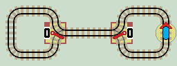

Lazy Points

Each lazy point switches the 'main' line between two curved 'branch' lines. Lazy points show 0 when switched to the upper branch line and 1 when switched to the lower branch line. They are called 'lazy' points because they remain in the position they were last set.
Lazy points make layouts interactive. They can be set as inputs or read as outputs, so allowing a layout, (or system) to exist in a number of different 'states'.
Interactive Layouts
Here is a typical layout, using two lazy points. Click the layout to start the train running. Note that the train covers all the track, and all the track is traversed in both directions.
| 
|
| Click layout to pause/run train | Click points to switch 0/1 | Click start circle to reset train/points |
You can almost feel the circuit wanting to calculate something. The points actually follow a 'Gray Code' sequence: 00, 01, 11, 10 etc, so we've almost got our first calculating layout!
Registers
Computational layouts need to be able to store binary numbers in some kind of memory. This is done using a row of lazy points arranged horizontally as a data register. Each lazy point holds a single bit of data, 0 or 1.
Binary ArithmeticComputers use binary arithmetic. The table shows the binary numbers 000 to 111 . The right most column (x1) is the least significant bit (LSB). Each column doubles in value, x2, x4 etc. The left most column is the most significant bit (MSB). So the above register is set to a value of 101 (binary) which is '4+1' or 5 (decimal). To hold larger numbers, the register is extended to the left. Any computational layout can be extended in this manner to compute numbers of any size. It is usually best to duplicate a central stage, as the LSB and MSB stages at each end can be slightly different. |
|
||||||||||||||||||||||||||||||||||||||||
Layouts with 2 Lazy Points
There are a further 4 distinct layouts containing two lazy points. Two layouts with 2 separate loops joined by a single track and two where both loops share a track. (see Wikipedia article).
|
|
|
|


| Click layout to pause/run train | Click points to switch 0/1 | Click start circle to reset train/points |
If you play with these 4 circuits, (they are interactive), you'll find that the train quickly gets 'trapped' in a single loop and fails to cover all the track. This illustrates the limitations of model train track layouts supplied with only lazy points. It is difficult to construct long train runs without entering a small infinity loop. See Auto Run Layouts.
This is a major problem when designing computational layouts, because a trapped train ends any further calculation. The unvisited track is wasted. The computation cannot return an answer and so fails. Constructing layouts with more lazy points does not help. It simply leaves more track unused when the train gets trapped.
Usually, this is no big deal. Most model trains can reverse, or can be picked up, turned around, and replaced on the track. But, we want our layouts to carry out calculations without human intervention. Therefore, 'Turing' trains always stay on the track and only move forwards.
To build more complex layouts, we need a second type of point, the Sprung point.